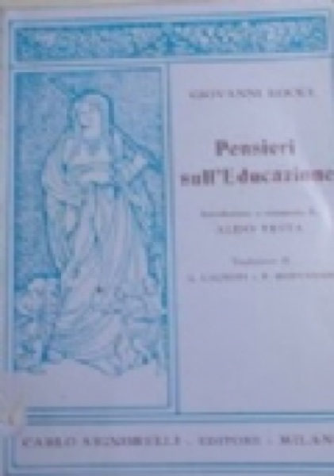
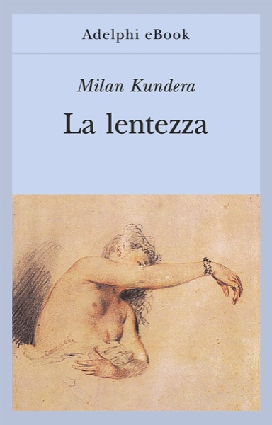
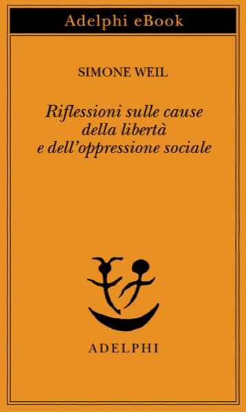

50:59 · 7 OPERE
Nietzsche e l'avvenire delle nostre scuole.
Il filo del discorso
Il video prende le mosse dalle conferenze di Nietzsche sull’avvenire delle scuole per discutere il rapporto fra formazione, autonomia e istituzioni. Prima di affrontare il libro, Dr Divago invita a valutare gli argomenti senza affidarsi al prestigio di chi li pronuncia. Presenta poi la cornice narrativa dell’opera e la collega a una tradizione di riflessione educativa che comprende Locke e Rousseau. Le letture selezionate insistono sul tempo necessario per capire, sulla capacità di uscire dai propri pregiudizi e sul limite di un’istruzione misurata soltanto attraverso risultati e guadagno. Nella seconda metà emergono le critiche alla burocrazia culturale, al linguaggio manipolato e all’alleanza fra potere e sapere ufficiale. Il contributo si chiude rivendicando la formazione come parte della vita umana, oltre il possesso di attestati.
I libri nel discorso

Sull’avvenire delle nostre scuole
Copertina: Adelphi, 1975
Il titolo italiano è leggibile a 202.019–207.879 secondi. L’autore è stato nominato a 173.549 secondi. A circa quattro minuti viene indicata un’edizione Newton Compton curata da Luca Crescenzi.
Passaggio 3:22 ↗ · Fonti e libro ↗
Il mondo come volontà e rappresentazione
Copertina: Newton Compton · edizione di riferimento
Schopenhauer è nominato da 371.01 secondi; il titolo, distribuito su due segmenti, compare a 377.43–379.70 secondi.
Passaggio 6:17 ↗ · Fonti e libro ↗
Pensieri sull’educazione
Identificazione probabile
Copertina: Carlo Signorelli, 1966 · fotografia di un esemplare
Fra 508.99 e 522.90 secondi si nomina Locke, un testo sull’educazione del 1693 e un titolo inglese fortemente deformato dai sottotitoli.
Passaggio 8:40 ↗ · Fonti e libro ↗
Emilio, o dell’educazione
Copertina: Laterza · edizione di riferimento
Il primo riferimento al titolo e a Rousseau è a 538.45–549.05 secondi, con errori della trascrizione automatica. Il titolo francese e la parte sull’educazione sono chiariti a 586.42–594.92 secondi.
Passaggio 8:58 ↗ · Fonti e libro ↗
La lentezza
Identificazione probabile
Copertina: Adelphi eBook, 2022
Fra 797.10 e 810.80 secondi il relatore nomina Kundera e il suo libro in francese. La prima resa del titolo è deformata, poi compare un riferimento alla lentezza.
Passaggio 13:21 ↗ · Fonti e libro ↗
1984
Copertina: Newton Compton · edizione illustrativa
Orwell è riconoscibile a 1777.82 secondi e il titolo numerico, trascritto con una cifra iniziale mancante, a 1782.99–1788.86 secondi nel discorso sulla manipolazione delle parole.
Passaggio 29:42 ↗ · Fonti e libro ↗
Riflessioni sulle cause della libertà e dell’oppressione sociale
Identificazione probabile
Copertina: Adelphi eBook, 2015
Weil è nominata a 1947.919 secondi; segue un titolo abbreviato sulle cause dell’oppressione sociale, a 1950.289–1955.86 secondi.
Passaggio 32:30 ↗ · Fonti e libro ↗